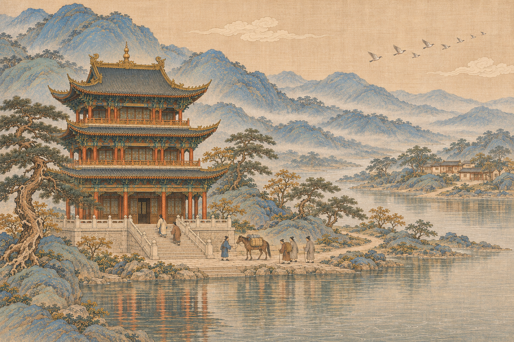
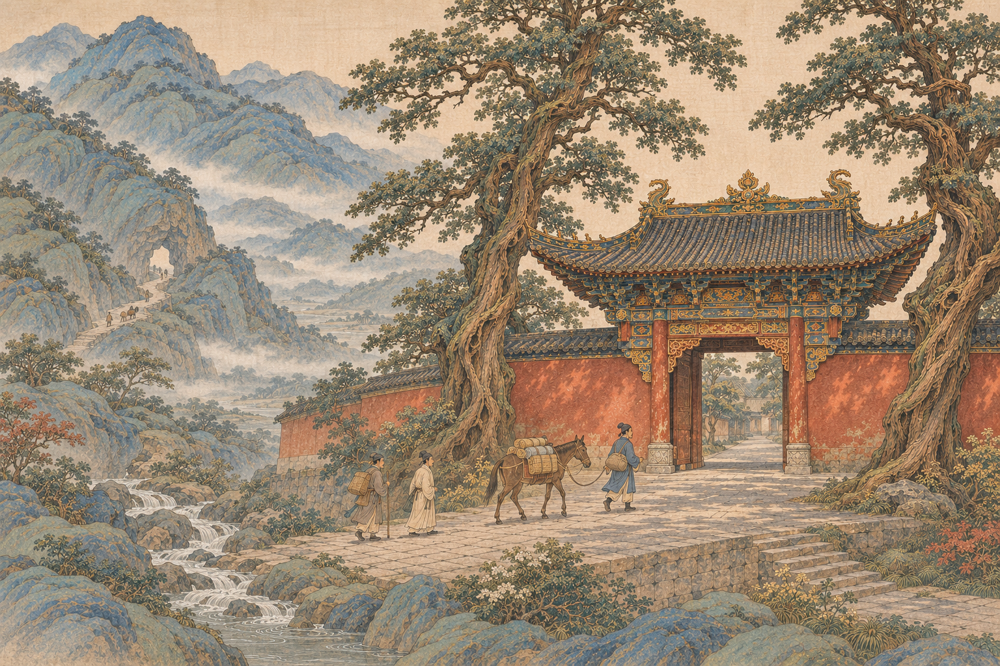
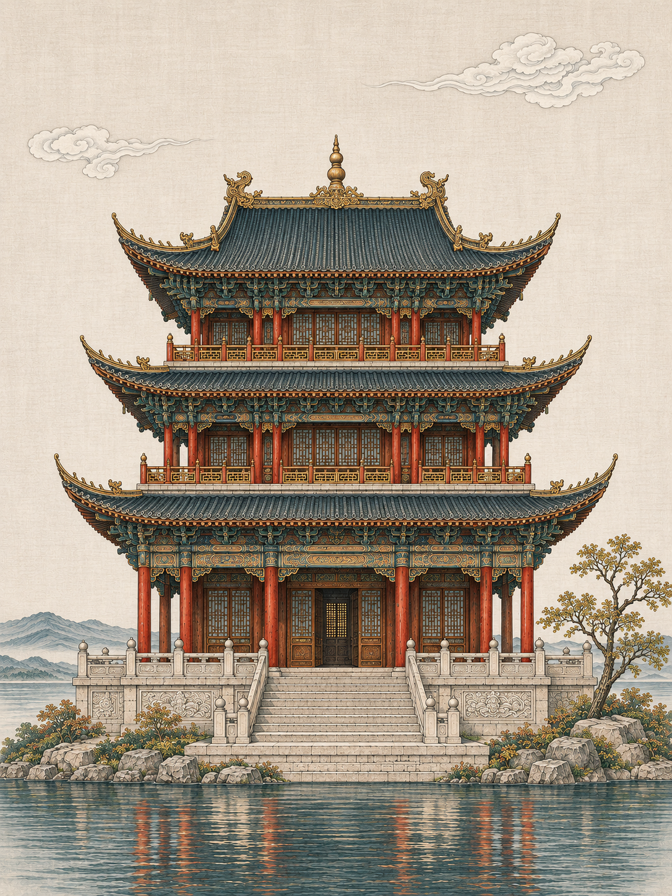
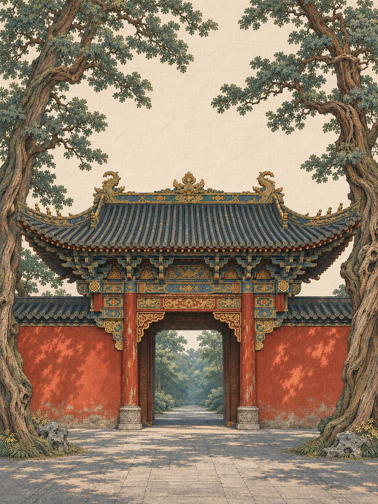

城市景图 · 绢本青绿山水
画风参考






风格原图
9 张 · 点击放大绢本设色色谱
行旅图局部 / sRGB赭金檐脊 · 描金
石青山峦 · 石青
褐墨松干 · 褐墨
苔绿山脚 · 苔点
暖绢云烟 · 绢底
取用同款间色
画稿以十二种基色设色，暗部、印面、金边另取黛蓝墨、印面朱和亮边金。分色矢量中的细碎笔触为两色叠染的 sRGB 数字近似。任选两支基色，每次按 12.5% 调整混合比例即可复现间色。
- 正文与签注
- 墨褐墨 配暖绢底；用于小字与勾形。
- 深底反白
- 绢亮绢 配黛蓝墨底；用于标签与细轮廓。
- 描金与淡染
- 赭金、亮绢用于高光和装饰；淡墨 用于有实线衬托的纹饰。正文、图标外缘与小字号使用褐墨；石青、苔绿、赭金只用于着色与提光。
- 关防朱印
- 印面朱 仅用于章面与纹饰。小字统一用褐墨或亮绢。
24 px 笔色与交互状态
- 小稿三笔
- 褐墨 勾形，石青 着色，亮绢 留光；印与系绳局部用朱砂 ，朱柱与行囊结取受光朱 。
- 选中
- 选中前后保留同一张原画、原尺寸；左上与右下添两笔引首角印。标签只加粗并以正文色画 2 px 短线。浅底以青黛 收角，深底改用亮绢 。与底色的亮度对比分别约 6.6∶1 和 14.7∶1。
- 悬停 / 按下
- 石青 提边；按下移 2 px，朱砂 收边，绢面同时压暗。
- 键盘焦点
- 双层墨、绢焦点环；三种底色都保留边界。
- 不可用
- 浅底用黛蓝底配灰绿字 ；深底用暖金底配褐墨字 。锁形、虚线与「不可用」标签共同标出状态。
界面用色取用整套 CSS 色值
- 织物
- 燕尾旗随布褶起伏，朱砂马甲以斜向绗线、盘扣和下摆山纹区分软硬材质。
- 器型
- 玻璃瓶用方印塞、折肩和收足成形，窄题签下方留出液面与玻璃厚度。
- 文书
- 飞鸽携折件，通关文牒以线装册页承托山水和四城名录。故事卡沿用册页的山脚与装订线。
- 墨线与用色
- 褐墨细线循瓦面、羽轴与瓶肩走向收笔。导航保留主轮廓，用短线和留白区分材质。
马帮行旅物料
押镖令旗与铜铃


风雪镖师 · 红马甲


风雪特调 · 方印切面玻璃瓶


飞鸽传书


四城通关文牒与总舵印


风雪暗号
雪落石桥
石桥那头有灯，走累了就歇一歇。
接镖按钮与故事卡框

第1批：导航与首页入口
点击切换状态。右侧为 24 px 专用稿，青黛双角印记表示导航已选中。
底部导航
押镖主页


通关文牒


飞鸽传书


我的行囊


首页入口
接镖令旗

江湖扫码打卡

马帮铜铃


风雪暗号

招募同路人

建筑竖幅



